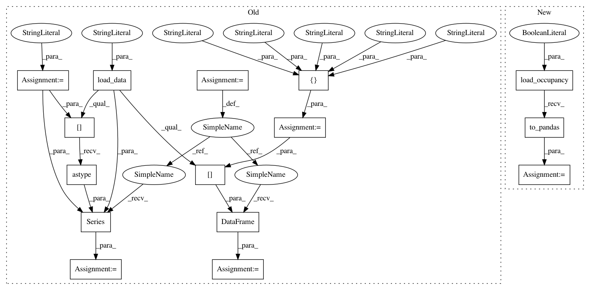

870022ab7abce46f9bff47c8a9c787808a630e59,tests/test_classifier/test_confusion_matrix.py,ConfusionMatrixTests,test_pandas_integration,#ConfusionMatrixTests#,273
Before Change
_, ax = plt.subplots()
// Load the occupancy dataset from fixtures
data = self.load_data("occupancy")
target = "occupancy"
features = [
"temperature", "relative_humidity", "light", "C02", "humidity"
]
// Create instances and target
X = pd.DataFrame(data[features])
y = pd.Series(data[target].astype(int))
// Create train/test splits
splits = tts(X, y, test_size=0.2, random_state=8873)
X_train, X_test, y_train, y_test = splits
After Change
_, ax = plt.subplots()
// Load the occupancy dataset from fixtures
X, y = load_occupancy(return_dataset=True).to_pandas()
// Create train/test splits
splits = tts(X, y, test_size=0.2, random_state=8873)
X_train, X_test, y_train, y_test = splits
In pattern: SUPERPATTERN
Frequency: 3
Non-data size: 15
Instances
Project Name: DistrictDataLabs/yellowbrick
Commit Name: 870022ab7abce46f9bff47c8a9c787808a630e59
Time: 2019-01-30
Author: benjamin@bengfort.com
File Name: tests/test_classifier/test_confusion_matrix.py
Class Name: ConfusionMatrixTests
Method Name: test_pandas_integration
Project Name: DistrictDataLabs/yellowbrick
Commit Name: 5d81bc9e8e19ab31f3e85f88207538e9f478d7d6
Time: 2019-07-04
Author: rebeccabilbro@users.noreply.github.com
File Name: tests/test_classifier/test_classification_report.py
Class Name: TestClassificationReport
Method Name: test_pandas_integration
Project Name: DistrictDataLabs/yellowbrick
Commit Name: 5d81bc9e8e19ab31f3e85f88207538e9f478d7d6
Time: 2019-07-04
Author: rebeccabilbro@users.noreply.github.com
File Name: tests/test_classifier/test_threshold.py
Class Name: TestDiscriminationThreshold
Method Name: test_pandas_integration